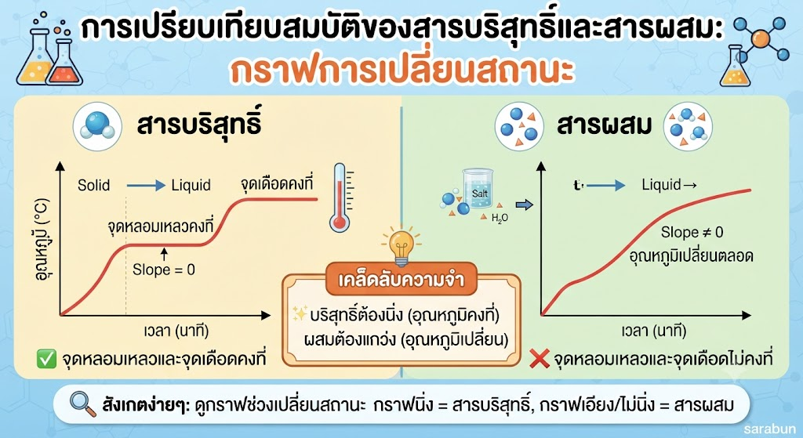
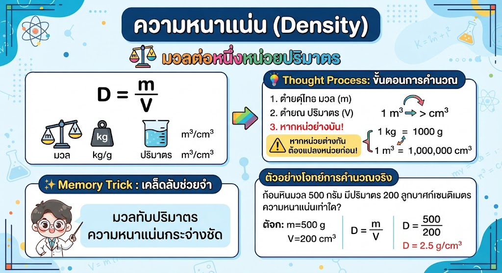

แนวคิด: สารบริสุทธิ์จะมีจุดเดือดและจุดหลอมเหลวที่ "คงที่" ในขณะที่สารผสมจะมีอุณหภูมิที่ "ไม่คงที่"
💡 Thought Process: เมื่อเห็นกราฟ ให้มองหา "ความชัน" หากกราฟเปลี่ยนสถานะแล้วมีความชันเป็น 0 (นิ่ง) นั่นคือสารบริสุทธิ์ แต่ถ้ามีช่วงอุณหภูมิเปลี่ยนไปเรื่อยๆ คือสารผสม
✨ Memory Trick: "บริสุทธิ์ต้องนิ่ง (อุณหภูมิคงที่) ผสมต้องแกว่ง (อุณหภูมิเปลี่ยน)"

แนวคิด: ความหนาแน่นคือมวลต่อหนึ่งหน่วยปริมาตร D = m / V
💡 Thought Process: ก่อนคำนวณ ให้ตรวจสอบหน่วยเสมอ! หากมวลเป็น kg และปริมาตรเป็น m³ ให้แปลงหน่วยเป็น g และ cm³ ก่อนคำนวณเสมอ
✨ Memory Trick: "มวลทับปริมาตร ความหนาแน่นกระจ่างชัด"
แนวคิด: อะตอมประกอบด้วยนิวเคลียส (โปรตอน+นิวตรอน) และอิเล็กตรอนที่วิ่งรอบๆ
เขียนโดย พระจอมเกล้าติวเตอร์